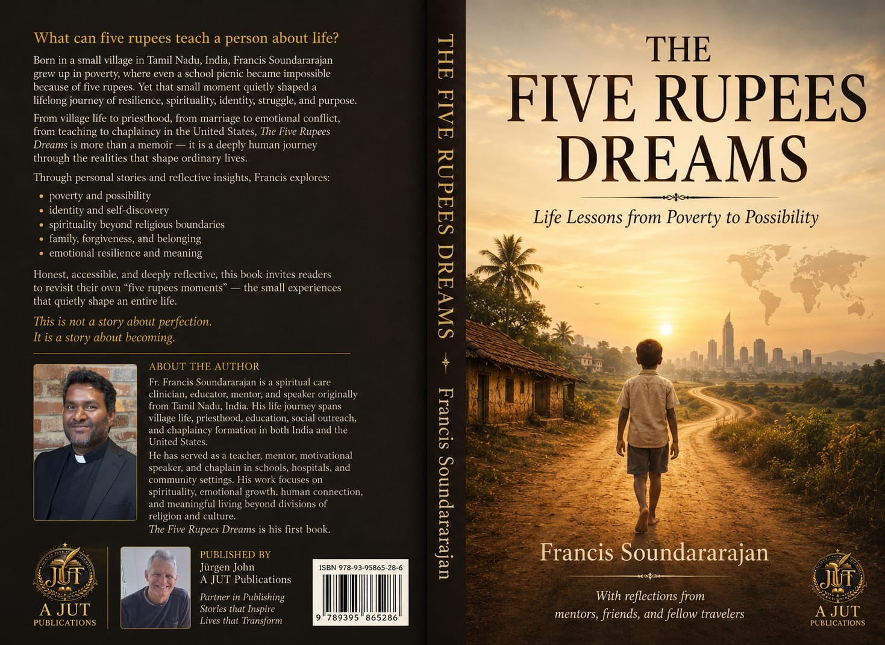

The Five Rupees Dreams is an inspirational reflective memoir based on true life experiences.
From missing a school picnic because of five rupees… to serving as a chaplain in the United States… this book explores:
This is not simply a story about success. It is a story about becoming.

Dive deep into the emotional core and guiding values explored throughout this true memoir.
Turning deep material limitation into a launchpad for ultimate global growth and life discovery.
Understanding that worth is non-negotiable, regardless of standing, resources, or societal class.
Fostering deep, lived human connections and compassion that cross conventional sectarian boundaries.
Allowing space for old wounds, family dynamics, and transitions to integrate into complete wholeness.
Navigating geographical boundaries and deep internal shifts to discover your true home.
Honoring the unseen sweat, tears, and absolute devotions of parents and loved ones on the road.
The rare art of rising, rebuilding, and beginning again when global frameworks fracture.
A silent anchor holding fast through storm-tossed realities, whispering of a brighter horizon.
Soundararajan Francis is a spiritual care clinician, educator, speaker, mentor, and writer from Tamil Nadu, India.
His life journey includes village upbringing, structural spiritual ministry, teaching and motivational speaking, social initiatives, Clinical Pastoral Education (CPE), and chaplaincy formation in India and the United States.
Turning struggle into strength
Finding identity through life experience
Spirituality beyond rituals
The power of relationships
Courage to begin again
Purpose through pain and growth
Humanity beyond divisions
Follow the incredible transitional phases of a journey rooted in service, devotion, and healing across continents.
Born in rural Randham Korattur, Tamil Nadu. A modest beginning that framed his core spiritual values, family resilience, and deep compassion.
Shaping the intellects and moral characters of students. Learning patience and understanding the profound impact of education on young minds.
Dedicated to community leadership and spiritual development. Navigating local governance, sacramental services, and pastoral advice.
A beautiful milestone of partnership. Finding immense core emotional strength, mutual development, and building dreams together with his family.
Directing educational charity drives to assist children from marginalized families. Transforming lives and opening doors of possibilities.
Crossing geographical frontiers to serve as a spiritual care provider. Ministering to hospital patients during moments of supreme vulnerability.
Publishing the lessons of a lifetime. Synthesizing true memoirs of poverty, resilience, and coexistence to direct and inspire dreamers worldwide.
Born in Randham Korattur, Tamil Nadu. Humble beginnings that shaped values, compassion, and resilience.
Joined formal guidance path. Dedicated years of deep reflection and foundational study.
Ordained to legacy milestone. Initiated years of deep service, mentoring, and communal guidance.
Marriage and new beginning. Shifting legacy paths towards unexpected core growth matrices.
Started educational NGO. Expanding outreach parameters to elevate social transformations.
Pandemic and life transition. Deep personal reflection and adaptation during global crises.
Moved to USA for chaplaincy residency. Extending care, hope, and human connection across cultures.
Published The Five Rupees Dreams. Structural launch framework shared live to inspire global dreamers.
A visual glimpse into village childhood, family operations, and global missions.
No traveler walks alone. Every mile covered, every barrier crossed, and every transition embraced was only possible through the steady devotion, belief, and sacrifice of my anchors.
Ponderings on resilience, identity, and the universal threads of human connection.
“Poverty taught me limitation. Hope taught me movement.”
— The Five Rupees Dreams“Sometimes healing begins when someone finally listens.”
— The Five Rupees Dreams“Humanity is greater than division.”
— The Five Rupees Dreams“Pain can become purpose when compassion enters the story.”
— The Five Rupees Dreams“Dreams survive when dignity survives.”
— The Five Rupees DreamsFollow interviews, reflections, motivational talks, and book discussions.
Click to access motivational videos and family archives on LifeTV.
Keep track of public engagements, broadcasts, and literary reviews.
Conversations detailing childhood resilience and cross-cultural care.
Listen NowA deep dive into structural clinical care and living spirituality across boundaries.
Watch BroadcastFeatures exploring key concepts of structural dignity and family transitions.
Read ExcerptsReflections presented at international chaplaincy forums and welfare institutions.
View SchedulesHave you read the book? Share your thoughts and ratings with the global community instantly.
“Life is not about having everything. It is about becoming everything you are meant to be.”
Bring inspiring insights on spiritual growth, resilience, and human connection to your organization.
“One struggle. One dream. One turning point.”
We invite you to share your personal reflections of resilience and breakthrough moments. Your story can inspire thousands of seekers across the globe, serving as a beacon of hope and shared human dignity.
"Missing college fees taught me resourcefulness. Someone lent me a small amount, which sparked my lifelong passion..."
"My first job paid very little, but the respect I was shown by my mentor defined my management style forever..."
"Transitioning to a new country was lonely, until a simple act of kindness from a neighbor restored my faith..."
Want to ask something confidentially or invite Soundararajan Francis for speaking panels directly? Fill out the secure form below to send an encrypted message directly to his email inbox.
📧 soundarfrancis@gmail.com
📞 +91 8825666271
📞 +1 (502) 768-7722
Jürgen John
📧 juergenjohn01@myquix.de
📞 +49 170 8172378
Thank you for reaching out. Your private message has been sent directly to the author's inbox.